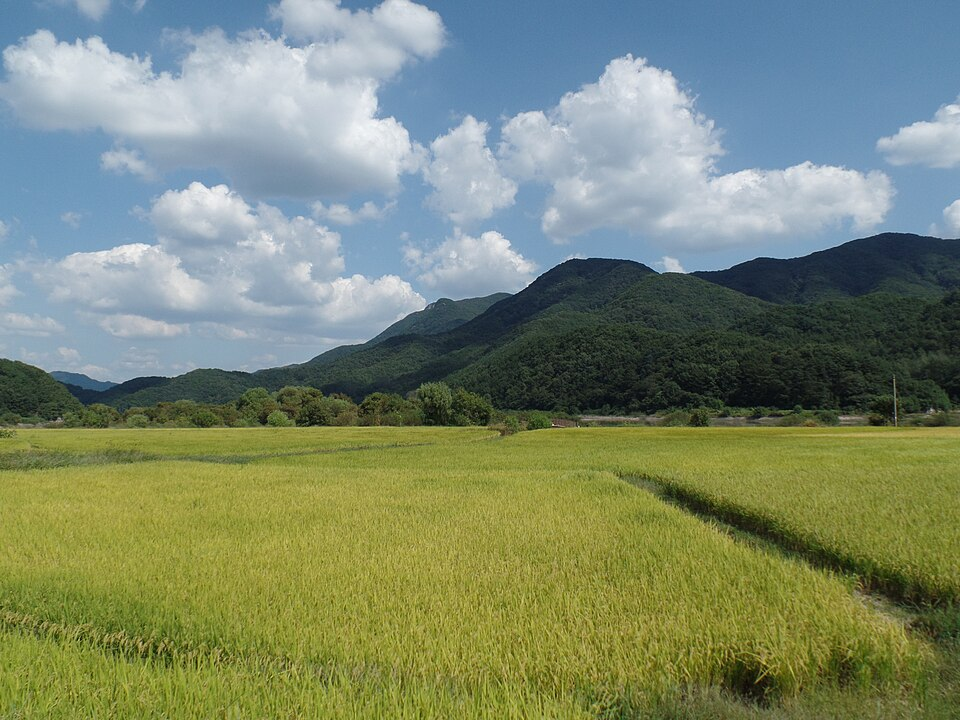

완주 검정고시 — 시간이 없을 때 쓰는 단기 합격 전략

“이만큼 남았는데 지금 시작해도 되나요.” 상담에서 가장 많이 듣는 말입니다. 결론부터 말씀드리면, 남은 기간이 짧을수록 공부량보다 순서가 결과를 가릅니다. 시간이 넉넉한 사람의 방법을 그대로 줄여서 하면 거의 실패합니다. 완주 검정고시를 짧게 준비하신다면 아래 순서대로 가시길 권합니다.
가장 먼저 정할 것은 ‘몇 과목을 볼지’입니다
단기 준비에서 제일 흔한 실수는 전 과목을 똑같이 얇게 훑는 것입니다. 그러면 어느 과목도 점수가 되는 수준까지 못 갑니다.
검정고시는 60점을 넘긴 과목이 과목 합격으로 남습니다. 그래서 남은 기간이 짧으면 확실히 끝낼 수 있는 과목 수를 먼저 정하고, 그 과목에 시간을 몰아주는 쪽이 낫습니다. 나머지는 다음 회차로 넘기면 됩니다. 한 번에 다 끝내려다 전부 애매해지는 것보다, 나눠서 확실히 쌓는 쪽이 결과적으로 빠릅니다.
교재보다 기출을 먼저 봅니다
시간이 넉넉하면 교재를 처음부터 읽고 기출로 확인하는 게 정석입니다. 그런데 기간이 짧으면 순서를 뒤집어야 합니다. 기출을 먼저 풀어 보고, 거기 나온 것만 교재에서 찾아 읽는 방식입니다.
이렇게 하면 “어디까지 알아야 하는지”가 첫날에 잡힙니다. 교재를 앞에서부터 읽으면 시험에 안 나올 부분에도 똑같은 시간을 쓰게 되는데, 짧은 기간에는 그 시간이 치명적입니다.
남은 기간을 세 구간으로 나눕니다
- 앞 절반 — 기출을 돌리며 모르는 것을 찾아내는 기간입니다. 이때는 점수가 낮게 나와도 정상입니다.
- 다음 30% — 찾아낸 구멍만 메웁니다. 새 교재를 사거나 새 단원을 여는 시기가 아닙니다.
- 마지막 20% — 틀렸던 문제만 다시 봅니다. 여기서 새로운 걸 시작하면 이미 외운 것까지 흔들립니다.
이 비율만 지켜도 마지막 주에 허둥대는 일이 크게 줄어듭니다.
목표가 60점이라는 걸 잊지 않습니다
검정고시는 평균 60점 이상이면 합격입니다. 만점을 목표로 하면 가장 어려운 문제에 시간을 오래 쓰게 되는데, 그 문제들은 배점이 같습니다. 어려운 한 문제를 붙잡는 동안 쉬운 세 문제를 놓치는 일이 실제로 자주 일어납니다.
그래서 단기 준비에서는 “어려운 걸 포기하는 연습”도 따로 해야 합니다. 이건 성실함의 문제가 아니라 전략의 문제입니다.
완주에서 이렇게 함께합니다
저희는 1:1 맞춤 과외라 남은 기간에 맞춰 범위를 잘라 드립니다. 정해진 진도를 끝까지 나가는 방식이 아니라, 이번 회차에 점수가 될 것부터 채웁니다. 기출을 같이 풀면서 어디가 비었는지 찾아내고, 그 부분만 설명합니다. 완주군과 인근 지역은 방문 수업이 가능하고, 이동이 부담되면 화상(줌) 수업으로 집에서 그대로 진행합니다.